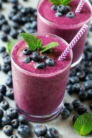

Blueberry Smoothie

The Excellent Blueberry Smoothie
Ingredients
- 33g (1 scoop) protein powder of choice
- 45g (¼ serving) frozen blueberries
- 1g (¼ tsp) guar/xanthan gum
- 90ml (⅜ cup) unsweetened almond milk
- Ice
Directions
- Add all ingredients to a blender. Blend for 1 minute on mediumhigh speed until there is a smooth consistency. Note that if you use casein protein, the shake will be thicker.
- Scrape sides of the blender and ensure all ingredients are blended. You may have to pulse the blender a few times depending on the consistency you want to achieve. You can always add more ice or almond milk to get the consistency you desire.
- Pour the mixture out of the blender and into a mug to consume immediately. You may drizzle with powdered peanut butter, fresh blueberries, or Walden Farms low-calorie syrup.